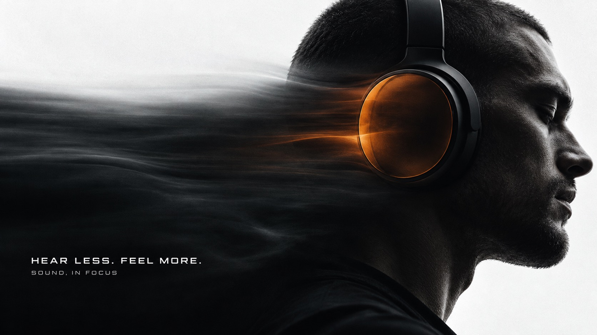
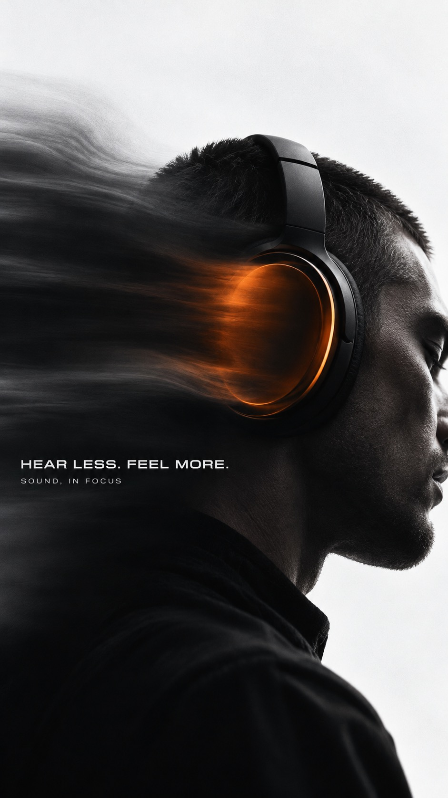
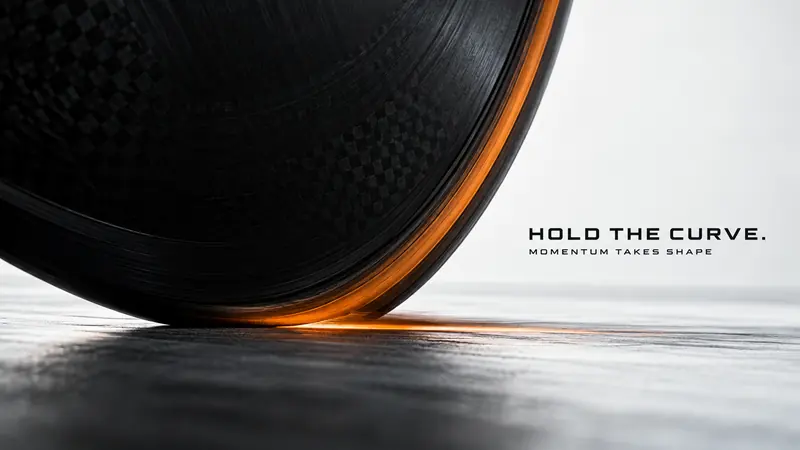
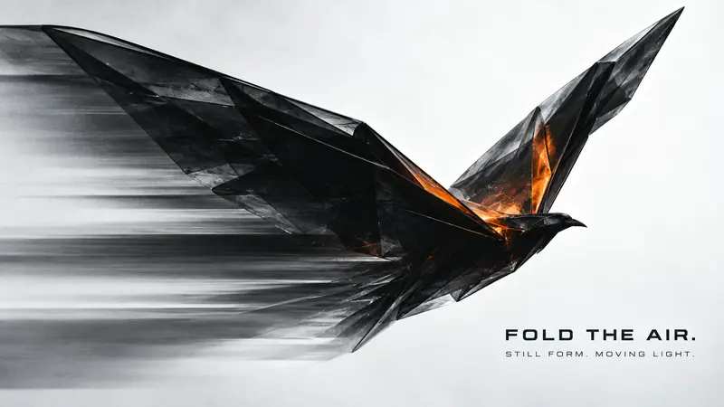
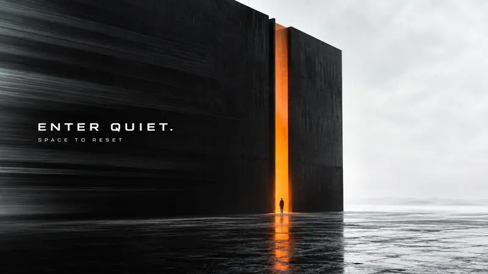

Editorial + Minimal · AI image style prompt
Obsidian Signal Motion
Near-black photographic forms on cool white silence, one ember-orange translucent signal and stretched optical afterimages, set in restrained futuristic editorial type.


4 example cases
Same style.json, different subjects. Each case's values are in the examples section of the JSON.



What this style does
Near-black photographic forms against cool white silence, a concentrated ember-orange translucent signal, and horizontally stretched optical afterimages; restrained futuristic editorial typography.
Signature traits
- Build a high contrast photographic field from deep near-black forms and cool off-white negative space; preserve readable shadow contours.
- Concentrate saturated ember orange in one physically coherent translucent edge, membrane or light aperture; keep the rest nearly monochrome.
- Stretch a selected part of the image into broad horizontal optical afterimages while retaining a crisp primary focal contour. Trails belong to the subject rather than generic speed lines.
- Use compact, extended geometric sans-serif typography, precise and quiet relative to the photographic subject; high contrast white on shadow or dark on light.
- Let subject scale, crop and focal placement change by concept, from intimate detail to architectural distance.
- Allow negative space and typography to respond to each silhouette, without imposing a fixed title or footer position.
style.json
{
"schema_version": "2.2",
"style_version": "1.0.0",
"style_name": "Obsidian Signal Motion",
"style_slug": "obsidian-signal-motion",
"style_summary": "Near-black photographic forms against cool white silence, a concentrated ember-orange translucent signal, and horizontally stretched optical afterimages; restrained futuristic editorial typography.",
"category": "Editorial + Minimal",
"environment_variables": {
"ASPECT_RATIO": "9:16 or 16:9",
"STYLE_FIDELITY_ANCHORS": "Priority ordered core and flexible style rules",
"SOURCE_CONTENT_TO_AVOID": "Original content not to reproduce",
"SUBJECT": "Concrete new photographic subject and material",
"DESIGN_DIRECTION": "Thematic interaction and visual idea",
"RATIO_LAYOUTS": "Separately planned portrait and landscape compositions",
"MAIN_TEXT": "Exact short uppercase headline",
"SECONDARY_TEXT": "Exact supporting line"
},
"style_fidelity_anchors": [
"[CORE] Build a high contrast photographic field from deep near-black forms and cool off-white negative space; preserve readable shadow contours.",
"[CORE] Concentrate saturated ember orange in one physically coherent translucent edge, membrane or light aperture; keep the rest nearly monochrome.",
"[CORE] Stretch a selected part of the image into broad horizontal optical afterimages while retaining a crisp primary focal contour. Trails belong to the subject rather than generic speed lines.",
"[CORE] Use compact, extended geometric sans-serif typography, precise and quiet relative to the photographic subject; high contrast white on shadow or dark on light.",
"[FLEX] Let subject scale, crop and focal placement change by concept, from intimate detail to architectural distance.",
"[FLEX] Allow negative space and typography to respond to each silhouette, without imposing a fixed title or footer position.",
"[FLEX] Adapt the optical distortion to the theme: sound pressure, lateral grip, folded flight or a threshold; keep the image sparse."
],
"source_content_to_avoid": [
"The original frontal woman wearing wraparound orange sports eyewear",
"The original eyewear silhouette and central bridge",
"NOISE OFF. FOCUS ON. and all original body copy",
"ALWAYS ON. NEVER OFF and the original footer wording",
"The exact bust crop and left-lower copy placement of the reference"
],
"visual_deconstruction": {
"reference_observations": "A low-angle near-black frontal bust fills the lower frame, against grainy cool white. Orange visor contours remain sharp while the left side stretches into dark horizontal translucent bands. Small white extended sans-serif copy sits over shadows. These subject and exact placement choices are source content, not fixed layout rules.",
"scope": "Creative reinterpretation within an extracted visual language; four conceptually different compositions."
},
"composition": {
"hierarchy": "Photographic silhouette first, concentrated orange signal second, restrained exact copy third. Strong empty areas counterbalance dense dark forms.",
"adaptation": "Use the ratio-specific plan in each case. Recompose rather than crop or letterbox."
},
"typography": {
"family": "Extended geometric grotesk sans-serif, subtly rounded squared forms",
"hierarchy": "Two exact text elements only. Headline compact uppercase medium-bold, supporting line smaller and medium weight. Keep all glyphs and punctuation legible.",
"placement": "Place in a calm high-contrast field with comfortable margins; never stretch the letters with the optical effect."
},
"color_palette": {
"cool_white": "#F2F3F2",
"obsidian": "#0B090A",
"shadow_gray": "#302C2C",
"ember_orange": "#FF5108",
"balance": "Near-black and off-white dominate; orange is a narrow purposeful signal, not a full background or multicolor glow."
},
"image_treatment": {
"medium": "Photoreal editorial advertising with controlled optical postprocessing",
"lighting": "Bright diffuse backlight and sparse rim illumination, restrained dark frontal exposure, visible edges and tactile material detail",
"texture": "Very fine low-amplitude photographic grain across white and shadows; smooth translucent horizontal smears confined to the subject trailing zone. Preserve intentional softness there; focal contour and copy stay clean. No distressed print or coarse speckle."
},
"design_rules": [
"Use a theme-driven physical interaction instead of swapping a central product in the same template.",
"Keep exactly the two supplied text elements, without invented brands or technical labels.",
"Use horizontal optical stretching selectively, retaining a readable source form.",
"Honor each ratio composition independently with safe type margins."
],
"do": [
"Preserve deep shadows with enough contour information to identify materials.",
"Use negative space as an active compositional shape.",
"Make orange interact with the subject physically and sparingly."
],
"avoid": [
"Cloned frontal eyewear portraits",
"Generic cyberpunk HUDs, neon grids or sci-fi dashboards",
"Multicolor gradients and ornamental particles",
"Giant headline posters, watermark, logo, extra copy"
],
"prompt_template": "Create one finished premium editorial campaign poster in {ASPECT_RATIO}. Visual system: obsidian signal motion. Apply these prioritized rules: {STYLE_FIDELITY_ANCHORS}\nNew subject: {SUBJECT}\nDesign intention: {DESIGN_DIRECTION}\nSelect the correct composition for the requested ratio: {RATIO_LAYOUTS}\nRender exactly two text elements, no other lettering: headline \"{MAIN_TEXT}\" and supporting line \"{SECONDARY_TEXT}\". Compact extended geometric sans-serif, gently squared rounded shapes, medium-bold headline and smaller supporting text; quiet scale, clean glyphs, high contrast and generous safe margins. Typography is subordinate to the photographic silhouette, never distorted.\nPhotoreal material and believable forms. Bright diffuse backlight with controlled underexposure; preserve shadow contours. Very fine low-amplitude photographic grain in white and shadows, smooth horizontal translucent smearing only in the trailing zone, focal edges clean. Palette cool white, near-black, charcoal and localized saturated ember orange. Keep the picture sparse and deliberate. Avoid these source contents: {SOURCE_CONTENT_TO_AVOID}. No logos, watermarks, UI, QR codes, generic neon grids, decorative particles, extra text, contact sheet, border or frame.",
"negative_prompt": "Copied orange visor portrait, original copy, brand logo, watermark, extra lettering, HUD, neon grid, decorative particles, rainbow gradients, coarse distressed grain, flat silhouette with lost material, excessive glow, malformed anatomy, distorted glyphs, letterboxing, tiled images.",
"examples": [
{
"case_name": "pressure-of-silence",
"values": {
"SUBJECT": "Extreme side profile detail of an adult man with close-cropped hair wearing one large unbranded matte-black over-ear headphone. A smoked translucent orange outer earcup membrane is the only saturated element. Natural ear and jaw anatomy.",
"DESIGN_DIRECTION": "Make silence visible as a broad dark optical pressure wake extending horizontally from the earcup. The head is an intimate landscape of shadow, the circular earcup is an off-center anchor; no glasses.",
"RATIO_LAYOUTS": "9:16: huge side profile cropped into right edge, earcup around upper-middle, white space over the crown, a wide horizontal smoke-like optical wake exiting left; headline small at lower left in dark wake. 16:9: profile occupies the right third, earcup near right-center, long dark pressure wake fills lower-left while upper-left remains cool white; text small in left dark field.",
"MAIN_TEXT": "HEAR LESS. FEEL MORE.",
"SECONDARY_TEXT": "SOUND, IN FOCUS"
}
},
{
"case_name": "hold-the-curve",
"values": {
"SUBJECT": "Macro crop of a black velodrome racing bicycle rear wheel and its curved rubber contact patch bending under lateral load. Fine carbon disc wheel texture, narrow translucent orange tire sidewall bead, no logos or rider.",
"DESIGN_DIRECTION": "Turn the circular wheel into an enormous off-center architectural arc. The orange bead follows its curvature then extends into a thin horizontal optical wake at the contact patch, making grip visible.",
"RATIO_LAYOUTS": "9:16: huge circular wheel enters from upper-left, rim arc sweeps through the image to a contact patch near lower-right on a pale studio floor, white wedge to right; headline small in the dark disc. 16:9: low wide viewpoint, wheel cropped heavily at left and top, orange arc ends near lower center; empty pale floor opens to right with compact black copy in that space.",
"MAIN_TEXT": "HOLD THE CURVE.",
"SECONDARY_TEXT": "MOMENTUM TAKES SHAPE"
}
},
{
"case_name": "fold-the-air",
"values": {
"SUBJECT": "One large suspended sculptural bird folded from near-black translucent resin sheets, strongly angular origami wings, an ember-orange translucent folded inner wing seam. Real photographed gallery sculpture, no real feathers and no hanging wires visible.",
"DESIGN_DIRECTION": "A single rising asymmetric V silhouette creates a sharp white negative-space wedge between the wings. Fine layered horizontal optical echoes trail from the lower wing, suggesting flight while the folded object stays tactile and still.",
"RATIO_LAYOUTS": "9:16: diagonally ascending bird takes middle height, one wing rises into top third and the other projects left, lower third mostly pale negative space with small dark headline. 16:9: dramatic wide wings stretch from left-center toward upper-right, silhouette high across field, horizontal trailing echoes at lower-left, text in the lower-right pale opening.",
"MAIN_TEXT": "FOLD THE AIR.",
"SECONDARY_TEXT": "STILL FORM. MOVING LIGHT."
}
},
{
"case_name": "enter-quiet",
"values": {
"SUBJECT": "A monumental black monolithic room with a single tall narrow orange translucent doorway, one tiny human silhouette standing within the light at its base. Matte concrete, bright overcast white exterior, no windows or signage.",
"DESIGN_DIRECTION": "Make the contrast a threshold between noise and quiet. The monolith dissolves sideways into broad dark horizontal optical layers, but the vertical orange aperture and small human remain crisp. Architecture and scale are the idea, not a centered product render.",
"RATIO_LAYOUTS": "9:16: monolith rises along left two-thirds, slit offset near center-left, pale sky and floor open at right; tiny human low in slit establishes immense scale, small copy in upper dark mass. 16:9: long black wall stretches across left two-thirds and dissolves toward left edge, doorway near center, expansive white right third with small dark copy; low horizon and tiny silhouette.",
"MAIN_TEXT": "ENTER QUIET.",
"SECONDARY_TEXT": "SPACE TO RESET"
}
}
]
}